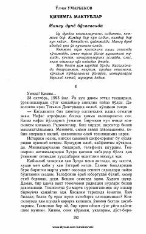

QMOg'ir damlarda qiziga yo'llangan ta'sirli maktublar va hayotiy o'ylar.
Muallif og'ir kasallik bilan kurashayotgan paytida qiziga yo'llagan ta'sirli maktublari va hayotiy o'ylarini bayon qilgan. Asarda insoniylik, umrning mazmuni va yaqinlar muhabbati chuqur aks ettirilgan.